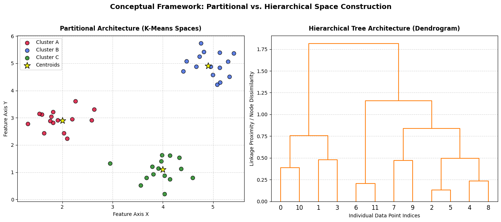
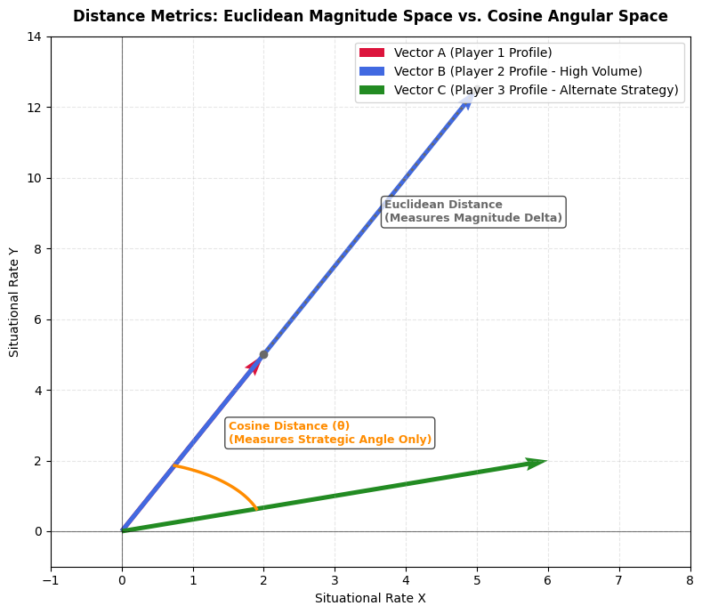
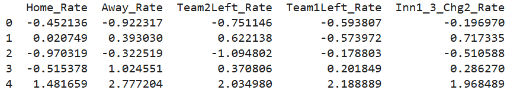
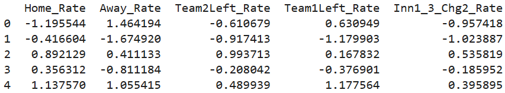
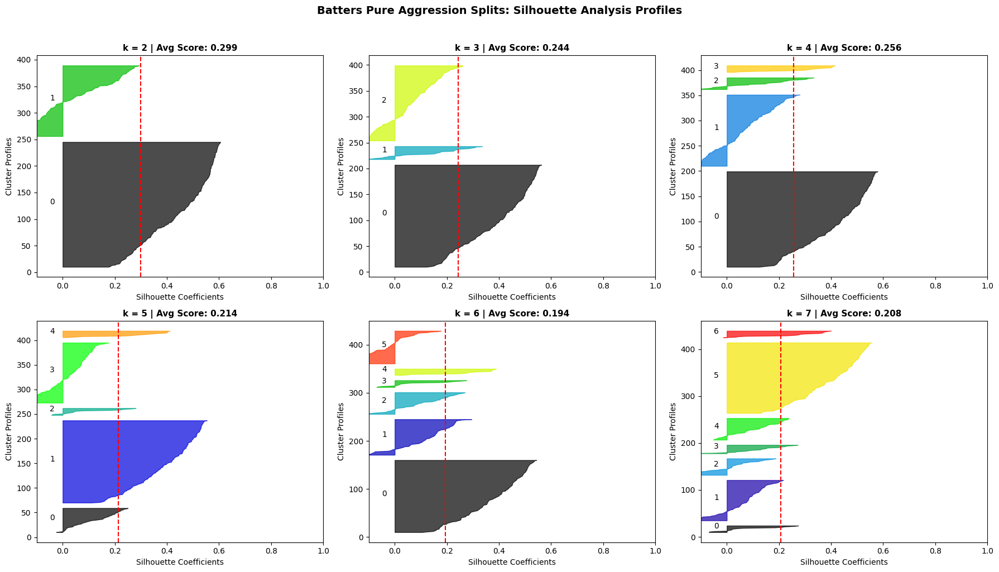
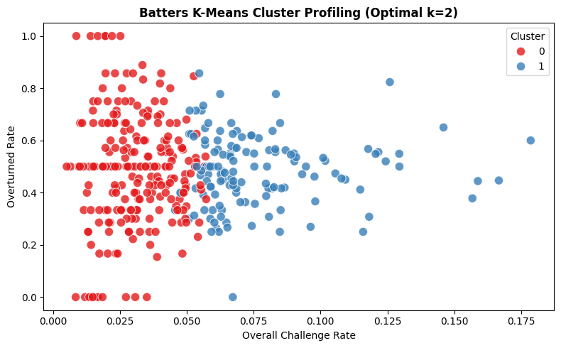
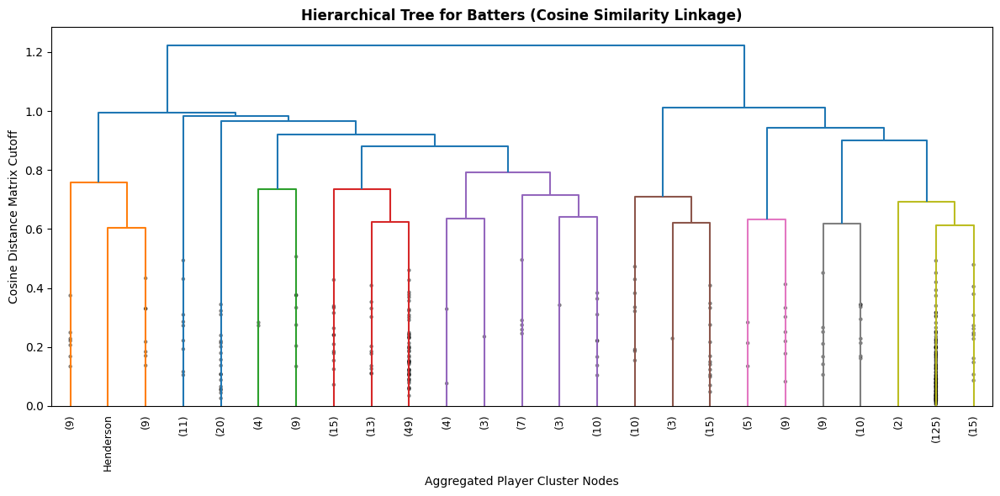

Clustering Overview
Clustering techniques serve as a primary pillar of unsupervised machine learning by partitioning unlabeled datasets into distinct groups based on intrinsic feature similarities. This analytical approach evaluates behavioral data without the guidance of pre-established labels, allowing natural patterns and latent structures to emerge directly from the tracking matrices. Within the scope of this research, clustering is deployed to uncover hidden player archetypes based on how batters and catchers strategically employ pitch challenges across various game scenarios. By grouping athletes purely by their situational trigger habits, it becomes possible to identify distinct operational profiles and determine whether specific tactical tendencies correlate with higher success rates when appealing.
This study implements and compares two distinct clustering architectures: partitional clustering and hierarchical clustering. Partitional clustering, executed via the K-Means algorithm, divides a dataset into a predefined number of non-overlapping groups by iteratively minimizing the geometric distance between individual data points and their respective group centroids. In contrast, hierarchical clustering builds a bottom-up, tree-like structure known as a dendrogram by sequentially merging individual observations based on their proximity. While partitional methods require a specified cluster count and optimize for compact groupings, hierarchical clustering offers an unconstrained view of data relationships, revealing a nested progression of strategic behaviors across the player base.
The choice of distance metric fundamentally dictates how similarity is calculated within these multi-dimensional feature spaces. Standard partitional models rely on Euclidean distance, which measures the straight-line magnitude between coordinate points in space, making it highly sensitive to absolute differences in raw percentages. To complement this, the hierarchical model employs Cosine Similarity as its proximity measure to compute the angular divergence between vectors. By focusing on the direction of the strategic profile rather than the absolute scale, Cosine Distance evaluates the proportion and balance of a player's challenge habits—such as a tendency to favor breaking balls over fastballs—independent of their total volume of challenge opportunities.


Data Prep
Unsupervised clustering algorithms require entirely unlabelled, continuous numeric inputs to compute accurate distance matrices without introducing systematic bias. To ensure a clean feature space that isolates pure tactical aggression, all non-numeric identifiers, player names, and team metadata registries were programmatically stripped from the datasets. Crucially, an explicit isolation rule was enforced to filter out all metrics detailing challenge overturn rates. Including success outcomes within the training matrix would cause the algorithms to group players by performance rather than habit, defeating the core research objective of assessing how blind strategic tendencies influence real-world overturn efficiency.
The resulting feature space comprises 15 distinct situational splits (ending strictly in the _Rate suffix), capturing player challenge frequencies across home versus away environments, inning groups, remaining challenges, and specific pitch type classifications. Because distance-based models are highly sensitive to variations in scale, these features were normalized using a standard Z-score transformation to establish a mean of zero and a standard deviation of one across all rows. To prevent low-sample anomalies from distorting the cluster boundaries, an opportunity threshold filter was applied to restrict the analysis to players with a minimum of 100 challenge opportunities during the season. Below are links to the datasets used for the clustering pipeline.
Dataset Links:
- Full-Season Batting Splits CSV: MLBData-ABSSituationalSplits-Batters-FullSeason.csv
- Full-Season Catching Splits CSV: MLBData-ABSSituationalSplits-Catchers-FullSeason.csv


Code
Clustering Results
To evaluate the structural properties of player strategy profiles, K-Means was executed across a range of constraints ($k=2$ through $k=7$). The geometric validity of these partitions was assessed using silhouette coefficient width diagrams to identify the optimal k.
Batter Strategic Aggression Archetypes
Evaluating the continuous rate feature matrix for batters reveals a highly clean boundary partition at $k=2$. Beyond this point, increasing the cluster count forces arbitrary divisions that blur existing cluster definitions and introduce overlapping classification nodes.

Figure 5: Batter Silhouette Coefficient diagnostic grids across multiple test counts. The $k=2$ configuration maximizes average width while preventing any cluster rows from dipping below the zero line.

Figure 6: K-Means partition projection mapping total batter aggression profiles. The split separates the cohort into two clearly defined tiers of trigger frequency.

Figure 7: Hierarchical cluster tree utilizing angular cosine distance linkages. The tree's primary trunk division confirms the two master archetypes isolated by the K-Means partition.
Batter Archetype Table
The table below tracks the complete situational averages across the isolated batter profiles, linking strategic habits directly to real-world review success outcomes:
| Feature Metric | Cluster 0 (Disciplined Watchers) | Cluster 1 (High-Volume Aggressors) |
|---|---|---|
| Player Count | 236 | 134 |
| Total Challenge Rate | 0.031 | 0.077 |
| Total Overturned Rate (Success) | 0.486 | 0.484 |
| Home Venue Rate | 0.031 | 0.078 |
| Away Venue Rate | 0.032 | 0.076 |
| Team 2 Out-Remaining Rate | 0.032 | 0.075 |
| Team 1 Out-Remaining Rate | 0.031 | 0.082 |
| Innings 1-3 (2 Challenges Left) | 0.021 | 0.055 |
| Innings 1-3 (1 Challenge Left) | 0.018 | 0.052 |
| Innings 4-6 (2 Challenges Left) | 0.033 | 0.079 |
| Innings 4-6 (1 Challenge Left) | 0.022 | 0.063 |
| Innings 7-9 (2 Challenges Left) | 0.052 | 0.105 |
| Innings 7-9 (1 Challenge Left) | 0.036 | 0.099 |
| Extra Innings (2 Challenges Left) | 0.086 | 0.277 |
| Extra Innings (1 Challenge Left) | 0.067 | 0.192 |
| Fastball Rate | 0.032 | 0.077 |
| Breaking Ball Rate | 0.029 | 0.074 |
| Offspeed/Other Rate | 0.033 | 0.088 |